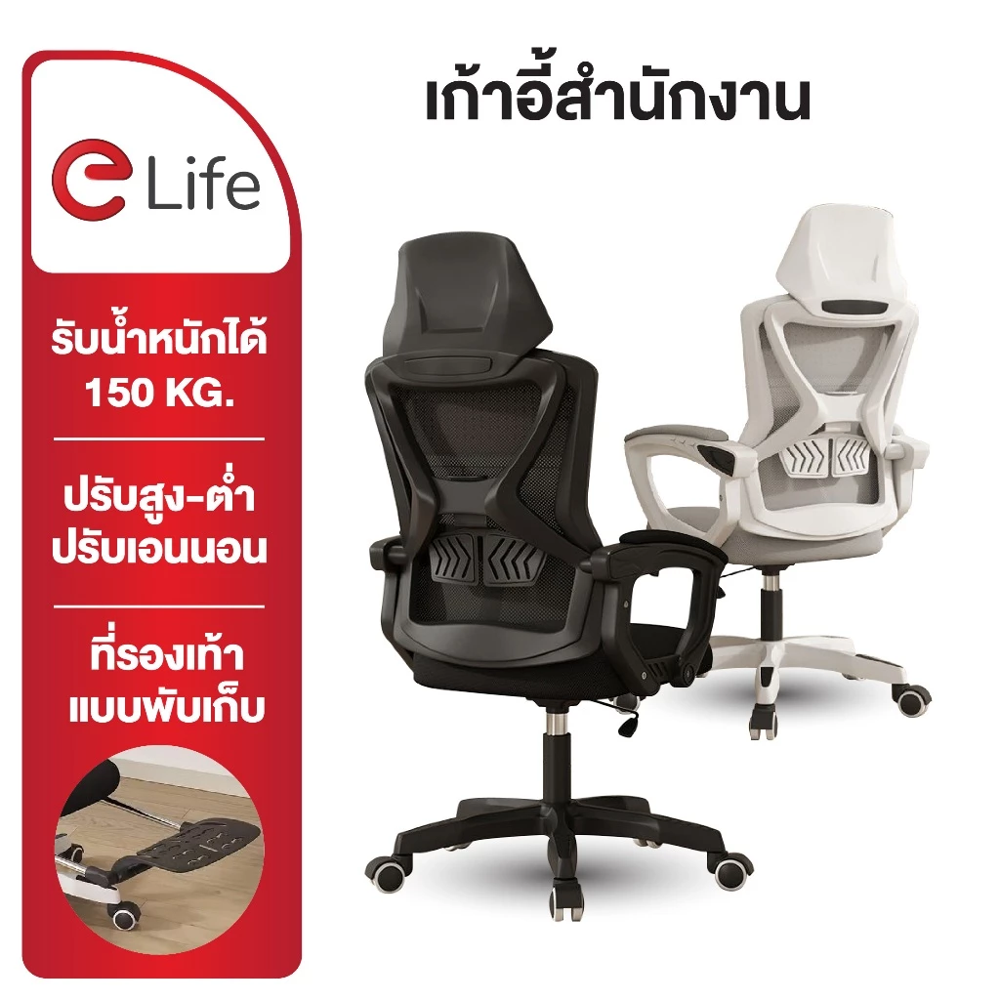

วางรูปสินค้าที่นี่1Elife เก้าอี้ทำงาน เอนได้ Office Chair เพื่อสุขภาพ
ราคา Shopee: 780 บาท
ถูกที่สุดในกลุ่ม เอนหลังได้ มีที่รองหลัง ปรับความสูงได้ เหมาะกับคนที่เพิ่งเริ่มทำงานที่บ้านและยังไม่อยากลงทุนมาก ใช้งานได้จริงในราคาไม่ถึง 800 บาท
- โครงสร้างเหล็ก + ตาข่าย/ผ้า
- ปรับความสูงได้ (ลูกสูบแก๊ส)
- เอนหลังได้
- ที่วางแขนมี
ข้อดี
- ราคาถูกที่สุด ไม่ถึง 800 บาท
- เอนหลังได้ มีที่รองหลัง
- ปรับความสูงได้
ข้อเสีย
- วัสดุไม่ทนเท่ารุ่นแพงกว่า
- ฟังก์ชันปรับน้อยกว่า Ergonomic จริงๆ
เหมาะสำหรับ: คนอยากลองใช้เก้าอี้ทำงานที่บ้าน งบไม่เกิน 800 บาท ยังไม่จริงจัง
ดูราคาล่าสุดบน Shopee →